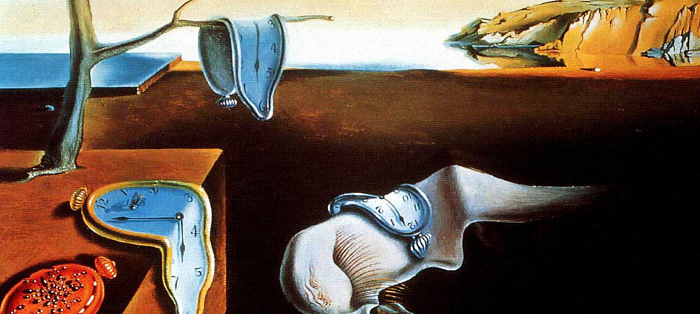
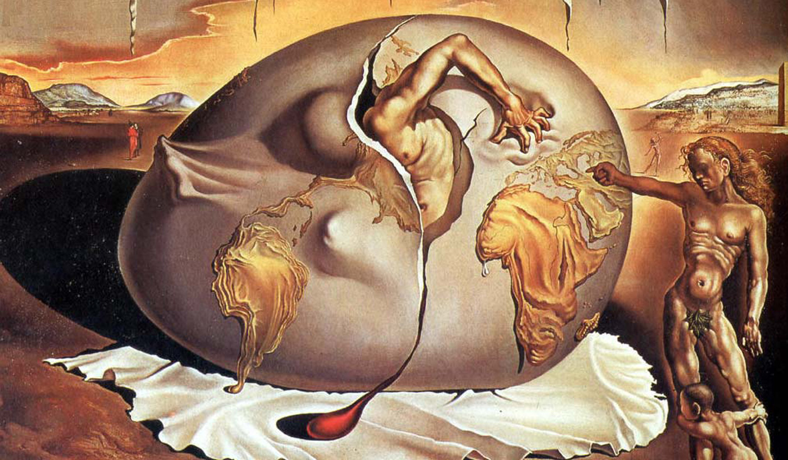

Surrealismo
O surrealismo surgiu na França na década de 1920. Este movimento foi significativamente influenciado pelas teses psicanalíticas de Sigmund Freud, que mostram a importância do inconsciente na criatividade do ser humano. De acordo com Freud, o homem deve libertar sua mente da lógica imposta pelos padrões comportamentais e morais estabelecidos pela sociedade e dar vazão aos sonhos e as informações do inconsciente. O pai da psicanálise, não segue os valores sociais da burguesia como, por exemplo, o status, a família e a pátria.
Artes plásticas
Foi através da pintura que as ideias do surrealismo foram melhor expressadas. Através da tela e das tintas, os artistas plásticos colocam suas emoções, seu inconsciente e representavam o mundo concreto. O movimento artístico dividiu-se em duas correntes. A primeira, representada principalmente por Salvador Dalí, trabalha com a distorção e justaposição de imagens conhecidas. Sua obra mais conhecida neste estilo é A Persistência da Memória. Nesta obra, aparecem relógios desenhados de tal forma que parecem estar derretendo.
O surrealismo no Brasil
As ideias do surrealismo foram absorvidas na década de 1920 e 1930 pelo movimento modernista no Brasil. Podemos observar características surrealistas nas pinturas Nu e Abaporu de Ismael Nery e da artista Tarsila do Amaral, respectivamente.
Questões do enem
Questão 1
O Surrealismo configurou-se como uma das vanguardas artísticas europeias do início do século XX. René Magritte, pintor belga, apresenta elementos dessa vanguarda em suas produções. Um traço do Surrealismo presente nessa pintura é o(a):
A) justaposição de elementos díspares, observada na imagem do homem no espelho.
B) crítica ao passadismo, exposta na dupla imagem do homem olhando sempre para frente.
C) construção de perspectiva, apresentada na sobreposição de planos visuais.
D) processo de automatismo, indicado na repetição da imagem do homem.
E) procedimento de colagem, identificado no reflexo do livro no espelho.
Algumas obras
Salvador Dalí A persistência da Memória 1931
Salvador Dalí Criança Geopolítica observando o nascimento do homem novo 1943
